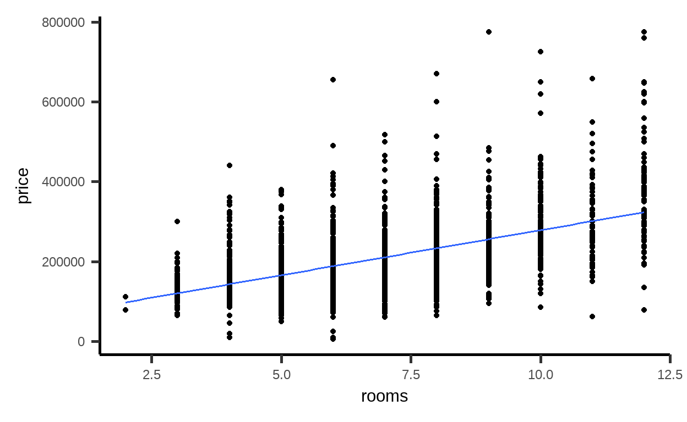

Lernziele
In diesem Modul lernen Sie:
- dass aus einer Beobachtung nicht immer eine Handlung abgeleitet werden kann.
Immobilienpreis
Von was hängt der Wert einer Immobilie ab?

Quelle: https://pixabay.com/de/photos/bauplan-grundriss-architektenplan-354233/
Ein Faktor, der besonders leicht zu bestimmen ist, ist die Anzahl der Zimmer. Dieses Kriterium wird in den USA auch häufig zur Vermarktung verwendet.
Im R Paket mosaicData gibt es einen Immobiliendatensatz: SaratogaHouses. Er enthält Daten zu Häusern in Saratoga County, New York, USA, im Jahr 2006.
Schauen wir uns dort den Zusammenhang zwischen Anzahl Zimmer (rooms) und Preis (price) einmal an:
# Vorbereitungen: Paket und Daten laden
library(mosaic)
data(SaratogaHouses)
# Streudiagramm
gf_point(price ~ rooms, data = SaratogaHouses) %>%
gf_lm() # Regressionsgerade ergänzt
Wir sehen: Je mehr Zimmer, desto höher der Preis im Mittel.
Lineare Regression - 1. Versuch
Gehen wir von einem linearen Zusammenhang zwischen rooms), \(\color{green}{x}\), und price), \(\color{blue}{y}\), aus:
\[\color{blue}{y}_i = \beta_0 + \beta_1 \cdot \color{green}{x}_i + \epsilon_i\] Dabei ist \(\beta_1\) die Steigung, die den (linearen) Zusammenhang beschreibt, \(\beta_0\) der \(y\)-Achsenabschnitt.
Geschätzt werden können die Koeffizienten \(\beta_0, \beta_1\) mit Hilfe der Daten:
erglm1 <- lm(price ~ rooms, data = SaratogaHouses)
erglm1##
## Call:
## lm(formula = price ~ rooms, data = SaratogaHouses)
##
## Coefficients:
## (Intercept) rooms
## 53016 22573Also:
\[\hat{\color{blue}{y}}_i = 53016 + 22573 \cdot \color{green}{x}_i \]
Angenommen, ein Haus hat gemäß Grundriss 4 abgetrennte Räume, also rooms), \(\color{green}{x}=\color{green}{4}\).
Damit liegt der geschätzte Mittelwert des Preise bei
\[\hat{\color{blue}{y}} = 53016 + 22573 \cdot \color{green}{4}= \color{blue}{143308}.\]
Quelle: https://pixabay.com/de/vectors/idee-erfindung-erfinder-denken-152213/
Nun könnte man einen scheinbar genialen Einfall haben: Man teilt das Wohnzimmer einfach auf. Aus Eins mach Zwei, aus \(4\) Zimmern werden \(5\), \(do(\color{green}{x}=\color{green}{5})\). Dann gilt gemäß des Modells:
\[\hat{\color{blue}{y}} = 53016 + 22573 \cdot \color{green}{5}= \color{blue}{165881}.\]
Wiederholung: Elemente Kausaler Diagramme
In den Module 4, 5 und 6 haben Sie die Grundelemente kausaler Diagramme kennengelernt:
| Pfad | \(\color{green}{X} \rightarrow \color{violet}{Z} \rightarrow \color{blue}{Y}\) | \(\color{green}{X} \leftarrow \color{violet}{Z} \rightarrow \color{blue}{Y}\) | \(\color{green}{X} \rightarrow \color{violet}{Z} \leftarrow \color{blue}{Y}\) |
|---|---|---|---|
| Name | Kette | Gabel | Umgedrehte Gabel |
| Verbindung \(\color{green}{X}\) und \(\color{blue}{Y}\) | Kausal | Nicht kausal | Keine |
| Rolle von \(\color{violet}{Z}\) | Mediator | Confounder | Collider |
| Adjustierung \(\color{violet}{Z}\) | Unterbricht kausalen Pfad | Unterbricht nicht-kausalen Pfad | Öffnet nicht-kausalen Pfad |
Wie können wir nun aus Beobachtungsdaten kausale Effekte schätzen?
Die Grundidee: Um die Änderung von \(\color{blue}{y}\) zu schätzen, wenn \(\color{green}{x}\) verändert wird, sollten alle nicht-kausale Pfade (Gabeln) unterbrochen werden. Gleichzeitig sollten kausale Pfade(Ketten) nicht unterbrochen werden. Zudem sollten keine nicht-kausalen Pfade (umgedrehte Gabeln) aufgemacht werden. Während also in einer Gabel für \(\color{violet}{Z}\) adjustiert werden sollte, sollte dies in einer Kette oder umgedrehten Gabel nicht passieren.
Für den Zusammenhang zwischen
Denken Sie bitte kurz darüber nach und klicken Sie erst dann auf Nächstes Thema

In diesem simplen Graphen können wir uns jetzt auf spezifische Aspekte konzentrieren.
Lineare Regression - 2. Versuch
Wenn die Wohnfläche ein Confounder ist, so sollten wir für diese Variable adjustieren, um den kausalen Effekt der Anzahl der Zimmer zu schätzen.
livingArea vor. Ergänzen Sie das Modell entsprechend.
lm(price ~ rooms + ___, data = SaratogaHouses)lm(price ~ rooms + livingArea, data = SaratogaHouses)Was fällt Ihnen auf?
# Modell ohne Wohnfläche
lm(price ~ rooms, data = SaratogaHouses)##
## Call:
## lm(formula = price ~ rooms, data = SaratogaHouses)
##
## Coefficients:
## (Intercept) rooms
## 53016 22573# Modell mit Wohnfläche
lm(price ~ rooms + livingArea, data = SaratogaHouses)##
## Call:
## lm(formula = price ~ rooms + livingArea, data = SaratogaHouses)
##
## Coefficients:
## (Intercept) rooms livingArea
## 11691.6 783.6 111.0Gegeben die
Auch wenn dies immer noch ein stark vereinfachtes Modell ist: Der geschätzte kausale Effekt der Anzahl Räume auf den Preis ist im Modell mit der Wohnfläche (price ~ rooms + livingArea) realistischer als der ohne (price ~ rooms). Natürlich kann es zusätzlich noch weitere Confounder geben, die berücksichtigt werden sollten.

Hinweis
Bitte melden Sie Fehler, Unklarheiten und Verbesserungsvorschläge hier.
Das Vorhaben Was, wie, warum? Einstiegskurs Kausale Inferenz (WWWEKI) wird mit Mitteln des Bundesministeriums für Bildung und Forschung unter dem Förderkennzeichen 16DHBQP040 gefördert.